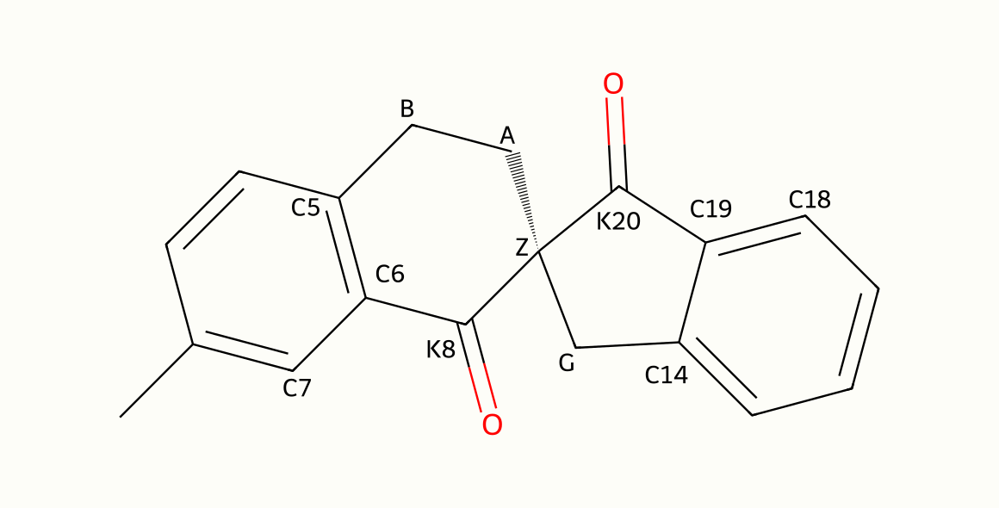

- 题面证据
- 用 C10 NMR-003 的结构和 400 MHz ¹H 峰表转录建立档案。随后加入两路响应已标定的 ¹³C 编辑观测，作为题内的受控模拟重测。
- 交付与判分
- N4-029 先用两路面积分开目标与干扰跃迁，再提交 600 MHz 下的内线间隔，绝对容差为 0.005 Hz。N4-030 提交两种模型的换场预测和排除判断，按两条科学判据复核。
- 核验范围
- 本地作者版共 30 道简答和 20 道数字填空。数字题均已独立复算，N4-029 修改后另做了公开题面复核。
样例分析。 两个模型可以重放同一组 400 MHz 线位。预报 600 MHz 下的线距，把模型之间的差异变成可以通过补测检验的判断。